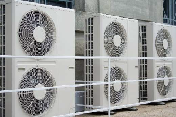
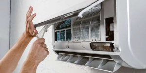
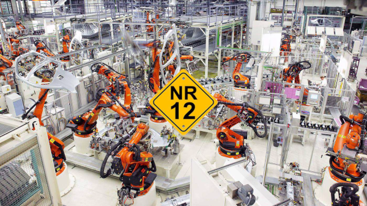
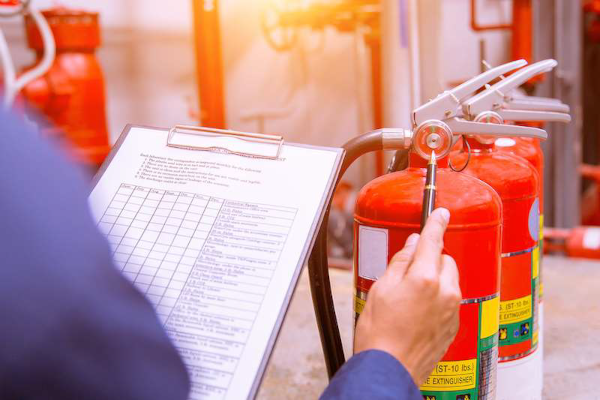

Ar condicionado
PMOC (Plano de manutenção, operação e controle)


Economia
Seguindo as recomendações do PMOC se obtém um ganho de eficiência energética e o prolongamento da vida útil dos componentes do sistema de climatização, além de evitar quebras repentinas do equipamento.
Saúde
O PMOC evita o surgimento e proliferação de fungos e bactérias causadores de doenças respiratória.
Responsabilidade
Portaria Nº 3.523, de 28 de agosto de 1998 - Legislação brasileira sobre responsabilidade e procedimentos para manutenção, operação e controle de sistemas de ar-condicionado. Resolução 09 de 16 de janeiro de 2003 da ANVISA - Análise do ar em ambientes climatizados LEI Nº 13.589, de 4 de janeiro de 2018 – Os edifícios de uso público e coletivo que possuem ambientes climatizados artificialmente devem dispor do PMOC de todos os sistemas de climatização, visando preservar a qualidade do ar dessa forma eliminar ou mitigar problemas de saúde gerados pela má qualidade do ar. NBR 16401 – Instalações de ar-condicionado – Sistemas centrais e unitários. NBR 7256 – Tratamentos de ar em estabelecimentos assistenciais de Saúde NBR 13971 – Sistemas de refrigeração, condicionado de ar, ventilação e aquecimento. NBR 14679 – Sistemas de condicionamento de ar e ventilação.
A lei, resolução e as normas envolvidos na área de climatização direcionam as tratativas necessárias para preservação da saúde em ambientes climatizados.
O Engenheiro mecânico é o profissional habilitado para gerar o laudo técnico e a ART junto ao órgão responsável. Evite transtornos com multas de fiscalizações, e indenizações promovendo a responsabilidade social.
Segurança para máquinas NR12
Economia
O laudo gerado na vistoria, agrega mais valor do que documentar o estado atual da máquina ou indicar as adequações conforme a norma, O laudo técnico possui um livro de ocorrências que auxilia na atualização dos procedimentos de manutenção preventiva e ajuda a criar novos procedimentos para manutenção preditiva evitando quebras repentinas na máquina e eliminando desperdício de tempo com maquina parada, além de gerar ganho de eficiência da máquina e prolongar a vida útil dos componentes.
Saúde
O Brasil apresenta um grande índice de afastamentos por conta de acidentes de trabalho, acompanhe pele site Observatório de Segurança e Saúde no trabalho. A máquina dentro dos padrões exigidos pela norma e com sua manutenção realizada de forma correta, garante a saúde e integridade física dos trabalhadores.
Responsabilidade
NR 12 – Segurança no trabalho em maquinas e equipamentos. ABNT NBR 12100 – Segurança de máquinas – Princípios gerais de projetos – Apreciação de riscos.
A execução de dos parâmetros exigidos pela norma é a única forma de evitar acidentes e assegurar a saúde e integridade física dos colaborados.
Responsável técnico de desmanches e desmontes
Economia
Evita paradas indesejadas das atividades de trabalho da sua empresa, mantendo a empresa trabalhando de forma legalizada.
Saúde
A avaliação das peças antes da reutilização evita acidentes, mantendo a saúde e integridade física de seus colaboradores.
Responsabilidade
RESOLUÇÃO CONTRAN 611, de 24 de maio de 2016, estabelece que toda empresa com atividades de desmontagem de veículos para comercialização das peças deve possuir um responsável técnico junto ao conselho regional de engenharia e agronomia- CREA.
O Engenheiro mecânico é o profissional habilitado para exercer as atividades necessárias junto ao órgão estadual para legalização das atividades. Evite transtornos com interdição do seu estabelecimento, multas de fiscalizações, e indenizações promovendo a responsabilidade social.
AVCB - Auto de vistoria do corpo de bombeiro
CLCB - Certificado de licença do corpo de bombeiro

Economia
Evita a interdição do imóvel por falta da documentação exigida por lei para a circulação e permanência de pessoas no local, auxilia na proteção de equipamentos e materiais estocados mantém os parâmetros exigidos pelas seguradoras para a cobertura de seus assegurados.
Saúde
O cumprimento das normas mantém as medidas necessárias para mitigar acidentes relacionados a incêndio respeitando o direito à vida e mantendo a integridade de seus ocupantes.
Responsabilidade
NR 23 - Proteção Contra Incêndios DECRETO Nº 63.911, de 10 de dezembro de 2018 - Institui o Regulamento de Segurança Contra Incêndios das edificações e áreas de risco no Estado de São Paulo e dá providências correlatas
O Engenheiro de Segurança do Trabalho é o profissional habilitado para exercer as atividades necessárias junto ao órgão estadual para legalização dos estabelecimentos para o exercício das atividades. Evite transtornos com interdição do imóvel, multas de fiscalizações, e indenizações promovendo a responsabilidade social.